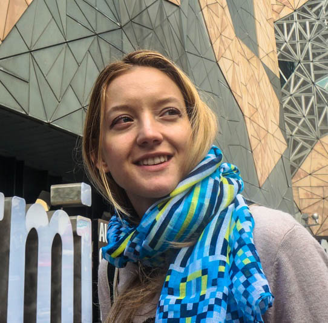

This is my portfolio.

Hello there, my name is
Sandra Szenti
I'm an engineer who loves crafting front-end projects
my skills

tools I use
JQuery - Facebook API - Google Maps - Google Spreadsheets - Bootstrap - NodeJS
interning
I'm currently looking for an internship where I can grow my skills exponentially. If this sounds like a team you know or you're in, please ping me